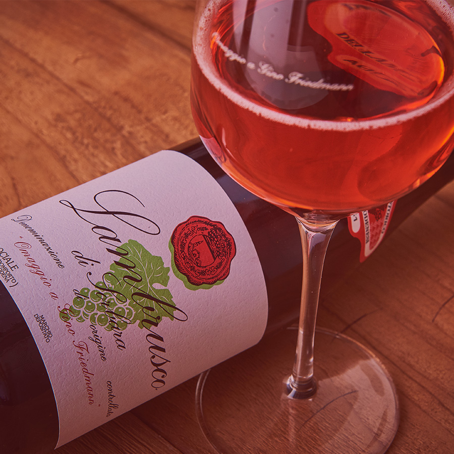
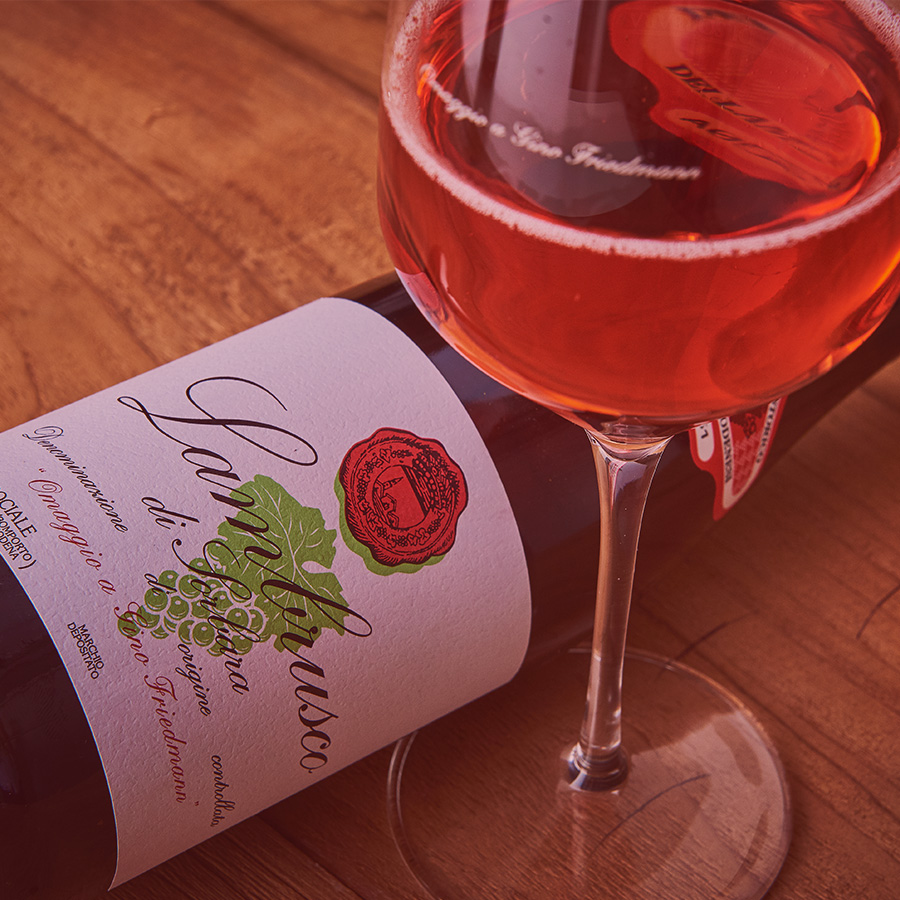
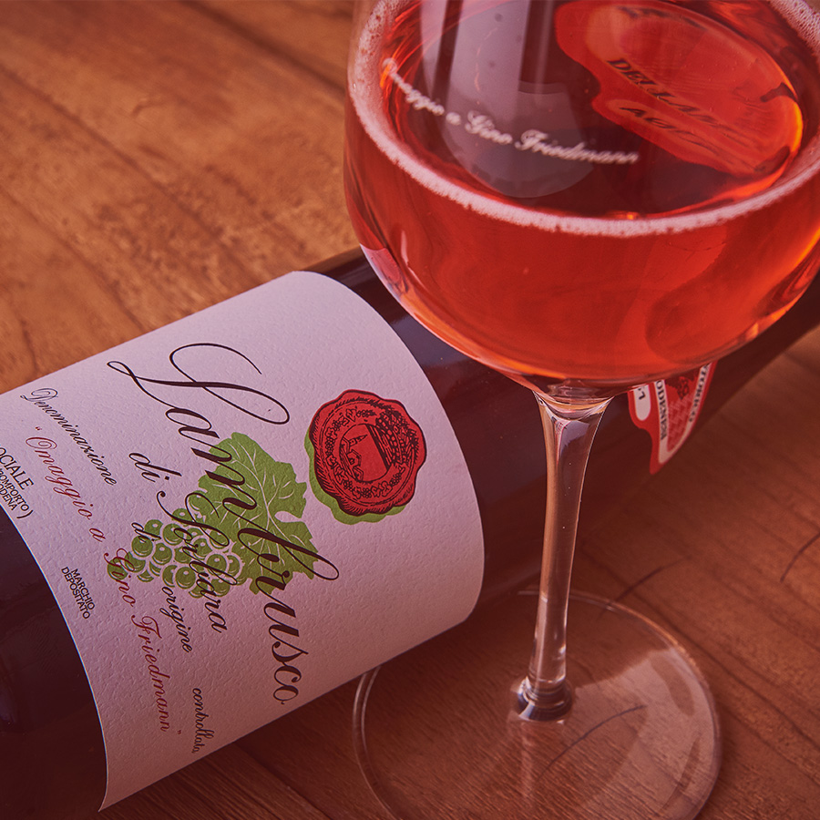

NB:Prima di iniziare, clicca sull' AUDIO per ascoltare un piacevole SOTTOFONDO MUSICALE
L'Italia, è rinomata in tutto il mondo per la sua ricca tradizione culinaria e la sua straordinaria varietà di vini, formaggi, salumi e altre prelibatezze locali. Il turismo enogastronomico offre ai visitatori l'opportunità di esplorare non solo i sapori unici delle diverse regioni italiane, ma anche la cultura, la storia e le tradizioni legate alla produzione alimentare e vinicola.Il turismo enogastronomico in Italia rappresenta una fetta significativa dell'industria turistica del paese e contribuisce in modo significativo all'economia nazionale. Le cifre esatte del suo valore possono variare ogni anno a seconda di diversi fattori, ma l'Italia è universalmente riconosciuta come una delle principali destinazioni al mondo per il turismo enogastronomico. Oggi tratteremo:
Pizza
Vino lambrusco

IL PIATTO: PIZZA
Per una serata casalinga davanti alla tv, prepariamo la regina delle pizze, ovvero la pizza margherita: ecco la ricetta tradizionale con pomodoro e mozzarella.
Ingredienti:
Per una singola pizza:
500 g di farina
500 g di pomodoro pelati
250 ml di acqua
15 g di lievito
20 g di olio
10 g di sale
3 mozzarelle
2 cucchiai di olio extravergine d'oliva
Origano
Sale
Preparazione:
1)Per realizzare la pizza margherita iniziate dal prefermento: in una ciotola capiente mescolate la farina con il lievito, poi versate l’acqua.
2) Amalgamate gli ingredienti con movimenti delicati. Quando avrete ottenuto un composto grossolano e non vedrete più tracce di farina sul fondo della ciotola, copritela con pellicola e bucherellate con una forchetta, così che possa respirare.
Riponete subito in frigorifero e lasciate maturare almeno per 24 ore, o comunque fino ad un massimo di 48 ore.
3) Trascorso il tempo di maturazione tagliate il prefermento a pezzi e trasferiteli nuovamente nella ciotola, poi copriteli con l’acqua; in questo modo scioglierete l’eventuale crosticina che si è formata in superficie.
4) Unite la farina e il lievito e iniziate a lavorare l’impasto nella ciotola.
5) Quando l’acqua sarà stata completamente assorbita aggiungete il sale e continuate a lavorare con movimenti dall’alto verso il basso. Infine versate l’olio e impastate ancora per incorporarlo in modo uniforme. Se preferite potete realizzare questi passaggi in una planetaria, dotata di gancio.
6) Quando avrete ottenuto una massa compatta trasferitevi sul piano di lavoro leggermente infarinato e lavorate l’impasto energicamente fino ad ottenere una consistenza liscia e omogenea. Riponete nuovamente l’impasto nella ciotola, coprite con un canovaccio umido e lasciate riposare per 15 minuti a temperatura ambiente.
7)Trascorso questo tempo siete pronti per stagliare la pasta: dividete l’impasto in 6 porzioni utilizzando un tarocco, poi roteate ciascuna sul piano di lavoro per sigillarla e arrotondarla. Adagiate man mano le palline nella cassetta per la lievitazione distanziandole fra loro. Chiudete con il coperchio (in alternativa potete utilizzare un vassoio leggermente infarinato coperto con pellicola o con un canovaccio umido) e lasciate lievitare per circa 3 ore.
8)Nel frattempo preparate il condimento: versate i pelati in una ciotola e schiacciateli con le mani, poi condite con olio e basilico, spezzettando le foglioline con le mani.
9) Salate e date una mescolata. Tagliate le mozzarelle prima a metà e poi a listarelle. Infine grattugiate il Grana Padano DOP.
10) Trascorso il tempo di lievitazionesiete pronti per stendere i panetti: spolverizzate leggermente l’impasto con la farina, poi schiacciatelo partendo dal centro e andando verso il bordo in alto, così da spingere l’aria nel cornicione.
11) Capovolgete l’impasto e procedete nello stesso modo, schiacciando sempre dal centro verso il bordo in alto. Ora allargate l’impasto tenendolo fermo con una mano e tirandolo delicatamente con l’altra, poi ribaltatelo sull’altra mano e sbattetelo delicatamente sul piano. Quando avrete ottenuto un disco del diametro di circa 28 cm cospargete il pomodoro in modo uniforme, partendo dal centro e lasciando liberi i bordi.
12) Cospargete con il Grana Padano DOP grattugiato e distribuite la mozzarella, poi condite con un filo di olio.
13) Trasferite la pizza sulla pala (se preferite potete stenderla direttamente sulla pala) e cuocete a 250° (o alla massima temperatura) per 5-7 minuti, posizionandola direttamente sulla pietra refrattaria preriscaldata, posizionata nella parte alta del forno. Una volta cotta, sfornate e fate scivolare la pizza nel piatto. Guarnite con un paio di foglie di basilico e servite subito la vostra pizza margherita!
Consigli...
- Se desiderate allungare il tempo di lievitazione dei panetti potete riporli in frigorifero per il doppio del tempo, avendo cura di farli tornare a temperatura ambiente prima di proseguire con la ricetta.
- Invece di schiacciare i pelati a mano potete utilizzare un passaverdure a maglia larga.
- Tagliate la mozzarella a fette il giorno prima e lasciatela scolare in frigo. In questo modo non rischierete la perdita dell'acqua durante la cottura della pizza.
...e curiosità!
Nata a Napoli nel 1889 dall’estro del pizzaiolo napoletano Raffaele Esposito, la pizza margherita fu creata in occasione della visita della Regina Margherita, allora sovrana d’Italia insieme al Re Umberto I, alla meravigliosa città di Napoli. Esposito creò per quell’evento tre pizze molto diverse tra loro, ma la Regina apprezzò particolarmente quella con la mozzarella e il pomodoro, che da quel momento in poi, in suo onore, venne chiamata Margherita.
LA BEVANDA: VINO LAMBRUSCO
Il Lambrusco è un vino rosso frizzante, che in Italia gode di una grande tradizione contadina e popolare.
Un vino frizzante è un vino che contiene una certa dose di “bollicine”, ovvero una certa percentuale di anidride carbonica; nello specifico, è frizzante un vino con una pressione massima di 2,5 atmosfere, a differenza degli spumanti che devono avere una pressione di minimo 3 atmosfere.
Come si prepara?
Il Lambrusco viene prodotto utilizzando tecniche di vinificazione tradizionale. L’uva viene diraspata e convogliata nei vinificatori, qui vi resterà per un periodo variabile da 1 a 6 giorni e attraverso la macerazione del mosto sulla vinaccia si arriverà ad ottenere il mosto che, attraverso la fermentazione alcolica in serbatoi di acciao a temperatura controllata, si trasformerà in vino; a questo punto il vino cosi ottenuto, che in questa fase è ancora fermo, verrà pulito dalla feccia creatasi dalla fermentazione del mosto, filtrato e periodicamente travasato in ossigenazione per mantenere il prodotto fresco e profumato.
La presa di spuma avviene trasferendo il vino in autoclave, serbatoio in acciaio inox a chiusura ermetica, qui il vino viene addizionato con una miscela di lieviti selezionati, zucchero derivato dall’uva, e sostanze nutritive che favoriranno la riattivazione dei lieviti. Questi ultimi attiveranno la seconda fermentazione del vino, la fermentazione produce alcol e come sottoprodotto anidride carbonica che, non potendo uscire dall’autoclave, quando questa sarà saturata dal gas, comincerà a solubilizzare nel vino, conferendogli la caratteristica effervescenza. Al termine della fermentazione, il vino, che a questo punto è frizzante, viene separato dai sedimenti attraverso la filtrazione e successivamente imbottigliato previa ulteriore micro filtrazione per togliere ogni residuo di lievito che in bottiglia potrebbe attivare delle rifermentazioni che andrebbero a modificare il prodotto finito.
5 curiosità sul Lambrusco!
Il nome racconta della casualità della sua nascita
Negli anni '70 e '80 era conosciuto come la "coca-cola italiana"
E' uno dei vini più citati dagli autori latini
Conosciuto da duemila anni, ma mai coltivato prima del '300
E' il vino più mediatico e romantico al mondo
E infine un breve video sulla storia, tipologie, sentori e abbinamenti del Lambrusco!
SPERIAMO CHE QUESTO VIAGGIO CULINARIO DI SAPORI UNICI E TRADIZIONALI IN ITALIA VI SIA PIACIUTO! Ci vediamo al prossimo world wide foods...
 
